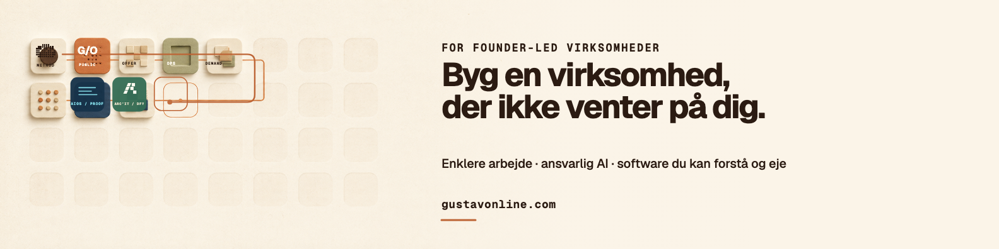
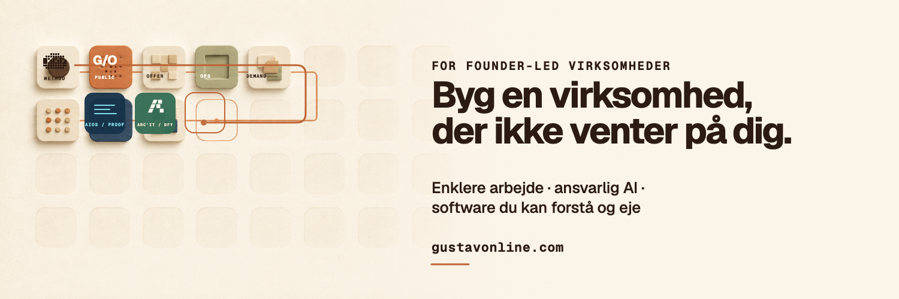
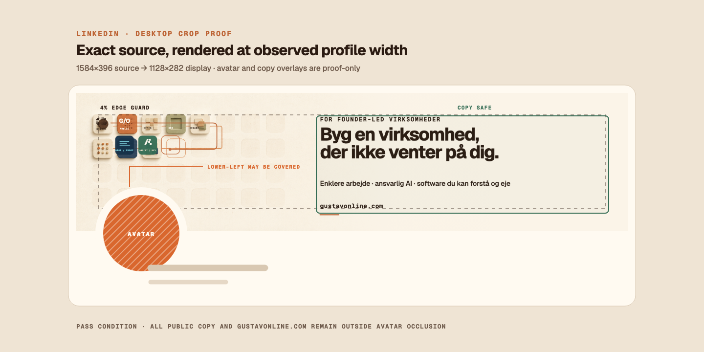
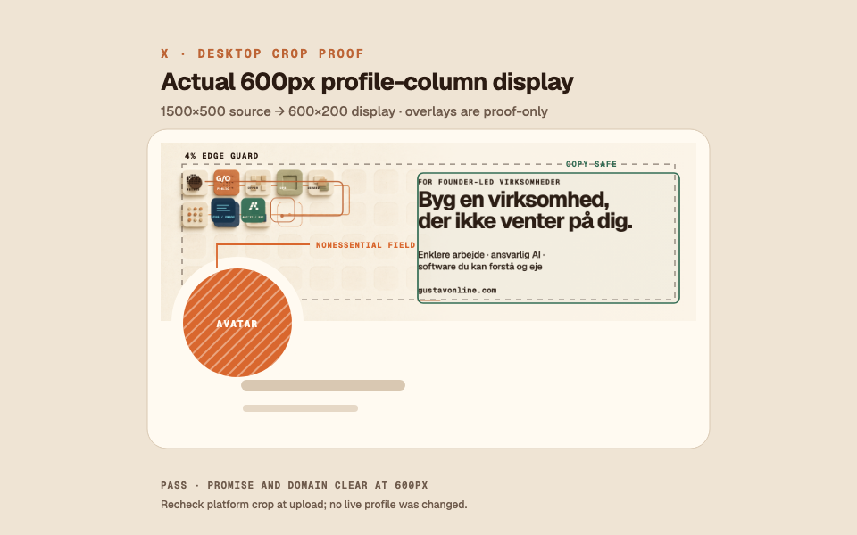

LinkedIn banner

One promise · two surfaces · one open workbench
A reviewed social-profile direction for founder-led businesses: warm paper, one present constraint, and only the modules needed to make the smallest complete change.
Both PNGs use the exact approved copy. The modules remain left and nonessential; the public promise stays in the right/center safe field.


These proof plates render the final PNG bytes at profile scale. Engineering marks are not part of the public exports.


The incomplete field is a method map, not a collection of apps or separate companies.
ADS keeps the reusable preview-state contract explicit without inventing application behavior for two static image exports.
The exact local PNG is present, dimension-checked, and visible in the proof surface.
The delivered images make no asynchronous request and expose no loading workflow.
If an image cannot load, descriptive alt text preserves the subject and expected surface.
Both surfaces carry resolved public copy; no empty data state exists in the banner.
ADS cannot publish or change a profile. Gustav Anderson owns approval and upload access.
The selected handoff remains local and inspectable without a network or receiving runtime.
Source-safe boundary
The Solt reference informed modular rhythm and an unfinished grid only. No third-party logo, icon, character, badge, app identity, or exact layout was copied.
The selected AI-generated seed is textless and noncritical. Every public word, mark, line, crop overlay, and export size is deterministic.